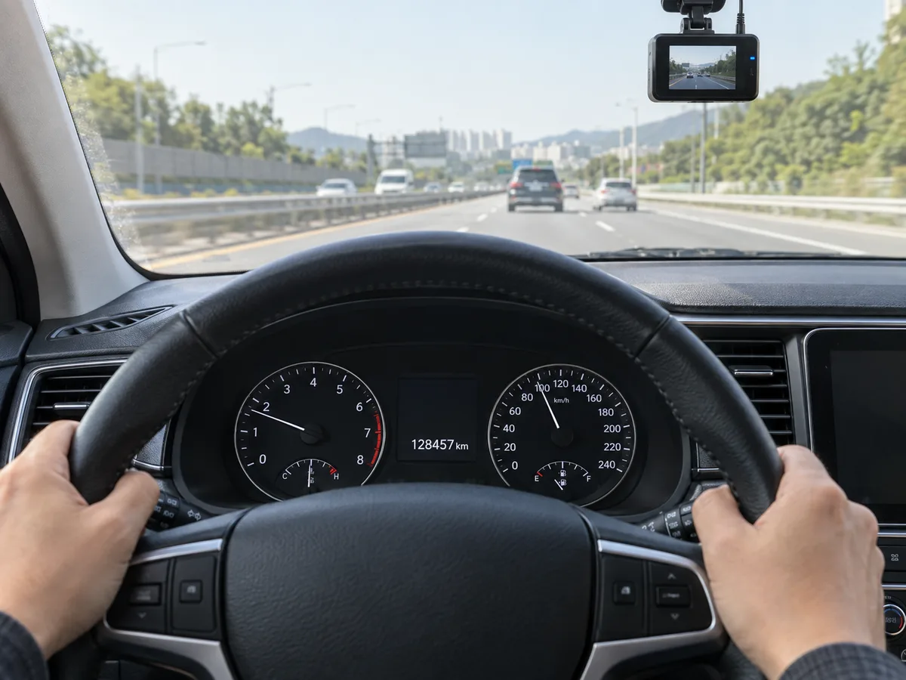

▲ 같은 조건이라도 보험사·채널에 따라 제시되는 보험료는 크게 달라질 수 있다 ⓒ CarPrism (AI 생성 이미지)
같은 차, 같은 운전자 조건인데도 보험사마다 견적서에 찍히는 숫자는 제각각이다. A사는 50만 원대, B사는 60만 원대를 부른다. 둘 중 하나가 바가지를 씌우는 걸까, 아니면 원래 이렇게 차이가 나는 게 정상일까.
카프리즘이 직접 여러 보험사에 견적을 요청해본 것은 아니다. 대신 손해보험협회와 생명보험협회가 공동 운영하는 공식 비교 공시 사이트 보험다모아, 손해보험협회의 자동차보험료 조정내역 비교공시, 보험연구원 리포트, 그리고 정부·언론이 보도한 보험료 차이 관련 자료를 종합해 보험사마다 보험료가 다른 이유와 합법적으로 보험료를 낮추는 방법을 정리했다.
1. 보험료는 어떻게 만들어지나 — 순보험료·사업비·할인할증등급
자동차보험료는 크게 두 덩어리로 나뉜다. 하나는 순보험료로, 사고가 났을 때 보험금으로 지급될 재원이다. 다른 하나는 사업비(부가보험료)로, 보험사의 인건비·전산비·광고비·설계사 수수료 등 운영에 들어가는 비용이다. 보험사가 부르는 최종 보험료는 이 둘을 더한 뒤, 가입자 개인의 조건에 따라 다시 조정된 값이다.
| 요소 | 내용 |
|---|---|
| 순보험료 | 과거 사고 통계를 바탕으로 산출된 위험률 기반 보험금 재원 |
| 사업비(부가보험료) | 인건비·마케팅비·설계사 수수료 등 — 보험사·판매채널마다 큰 차이 |
| 할인할증등급 | 1Z~29P 등급 체계. 무사고 1년마다 1등급씩 할인, 사고점수 1점당 1등급씩 할증 |
| 물적사고 할증기준금액 | 50만~200만 원 중 선택. 기준금액 초과 사고는 1점, 이하는 0.5점 할증점수 부과 |
| 차량모델등급 | 차종별 사고율·수리비를 반영한 등급 — 등급이 높을수록 자차보험료 상승 |
| 특약 구성 | 블랙박스, 마일리지, 안전운전습관, 자녀할인 등 — 가입 여부에 따라 최종 금액 좌우 |
📍 물적사고 할증기준금액, 낮출수록 무조건 유리하진 않다
할증기준금액을 낮게(예: 50만 원) 설정하면 평소 보험료는 조금 낮아지지만, 작은 사고에도 등급이 쉽게 할증된다. 반대로 높게(200만 원) 설정하면 평소 보험료는 다소 높지만 자잘한 사고로는 등급이 잘 떨어지지 않는다. 사고를 거의 내지 않는 운전자라면 기준금액을 낮춰 평소 보험료를 아끼는 편이, 사고가 잦은 편이라면 반대가 유리할 수 있다.
▲ 같은 증권이라도 항목별 산출 내역을 뜯어보면 순보험료와 사업비, 특약 할인이 각각 어떻게 반영됐는지 확인할 수 있다 ⓒ CarPrism (AI 생성 이미지)
2. 보험사마다 보험료가 다른 진짜 이유 — 손해율·가입자 구성·전략
같은 조건이라도 보험사마다 보험료가 다른 건 정상이다. 보험사가 부르는 값이 서로 다른 데는 몇 가지 구조적인 이유가 있다.
✅ 보험사별 보험료 차이를 만드는 요인
· 손해율 차이 — 보험사마다 가입자군의 사고율·지급보험금 규모가 달라, 매년 반영되는 기본보험료 조정폭이 다름
· 가입자 포트폴리오 — 어떤 연령대·차종·지역 운전자를 주로 유치했는지에 따라 회사 전체의 위험도가 달라짐
· 사업비 구조 — 인력 규모, 지점망, 광고비 지출 수준이 회사마다 다름
· 영업 전략 — 신규 가입자 유치를 위해 특정 구간(예: 무사고 장기 고객)에 더 공격적으로 할인을 주는 회사도 있음
· 특약 구성과 보장 범위 — 같은 이름의 특약이라도 보장 한도·면책 조건이 회사마다 달라 단순 가격 비교가 어려움
손해보험협회는 보험사별 보험료 조정률을 비교 공시하고 있어, 특정 회사의 보험료가 최근 얼마나 오르거나 내렸는지 확인할 수 있다. 자동차보험료 조정내역 비교공시 바로가기
📍 "같은 조건인데 113만 원 차이" — 보도된 사례
정부 정책 뉴스에서도 자동차보험료가 보험사에 따라 상당한 차이를 보인다는 점이 여러 차례 보도된 바 있다. 다만 이런 차이는 특정 회사가 무조건 비싸거나 싸다는 뜻이 아니라, 가입자의 연령·차종·지역·특약 선택에 따라 유불리가 회사마다 다르게 나타난다는 의미로 해석하는 것이 정확하다. 그래서 "무조건 이 회사가 싸다"는 결론보다 내 조건으로 직접 비교해보는 것이 중요하다.
3. 다이렉트(온라인) vs 대면채널 — 왜 가격이 벌어지나
다이렉트 자동차보험은 대체로 대면채널(설계사 가입)보다 저렴한 경향이 있다. 이유는 단순하다. 다이렉트는 가입자가 전화·PC·모바일 앱으로 직접 보장 내용을 설계하고 결제까지 마치기 때문에, 설계사 수수료 같은 중간 사업비가 상대적으로 적게 든다.
| 구분 | 다이렉트(온라인) | 대면채널(설계사) |
|---|---|---|
| 가입 방식 | 전화·PC·모바일 앱으로 본인이 직접 설계·결제 | 설계사와 상담을 거쳐 가입 |
| 사업비 구조 | 설계사 수수료 없음 — 상대적으로 낮은 사업비 | 설계사 수수료 포함 — 사업비 비중 높음 |
| 보험료 경향 | 동일 조건 기준 상대적으로 저렴한 경우가 많음 | 다이렉트보다 높은 경우가 많음 |
| 강점 | 가격, 비교의 편의성 | 복잡한 보장 설계, 사고 처리 시 대면 상담 |
✅ 다이렉트가 항상 정답은 아니다
· 보험료는 판매 채널뿐 아니라 보험사별 요율, 사고 이력, 운전자 범위, 차량 조건, 선택 특약에 따라도 크게 달라진다
· 특약 구성이 복잡하거나 사고 이력이 있어 상담이 필요한 경우, 대면채널이 오히려 나을 수 있음
· 최종 판단은 같은 보장 조건으로 다이렉트·대면 견적을 함께 비교한 뒤 내리는 것이 안전함
4. 보험다모아로 실제 비교하는 방법 — 체크리스트
보험다모아는 손해보험협회·생명보험협회가 공동 운영하는 공식 보험료 비교 공시 사이트다. 특정 보험사나 대리점이 아니라 업계 공동 플랫폼이라는 점에서, 보험사별 예상 보험료를 중립적으로 확인할 수 있는 창구로 꼽힌다.
▲ 보험다모아 같은 공식 비교 공시 사이트를 이용하면 여러 보험사의 예상 보험료를 한 화면에서 나란히 확인할 수 있다 ⓒ CarPrism (AI 생성 이미지)
✅ 보험다모아 비교 전 준비할 것
· 본인 확인 — 휴대폰 인증 또는 공동인증서로 로그인
· 차량번호 입력 — 보험개발원과 연동돼 차량 모델·만기일이 자동 조회됨
· 운전자 범위·특약 조건 통일 — 비교할 때는 운전자 범위(가족한정 등), 물적사고 할증기준금액, 주요 특약을 동일하게 맞춰야 정확한 비교가 됨
· 보장 항목까지 확인 — 단순히 가격만 보지 말고 대인·대물·자기신체사고 보장 한도가 회사마다 같은지 대조
· 가입은 별도 — 보험다모아는 견적 비교용이며, 실제 가입은 마음에 드는 회사의 공식 채널로 연결해 진행함
보험다모아 공식 사이트에서 직접 본인 차량 조건으로 여러 보험사의 예상 보험료를 비교해볼 수 있다. 보험다모아 바로가기
5. 보험료를 합법적으로 낮추는 방법
보험사를 갈아타지 않아도 보험료를 줄일 방법은 여러 가지다. 대부분 표준약관이 인정하는 공식 할인 특약이며, 중복 적용되는 경우도 많다.

▲ 블랙박스 장착, 낮은 연간 주행거리 등은 모두 실제 보험료 할인으로 이어지는 근거 자료가 된다 ⓒ CarPrism (AI 생성 이미지)
✅ 대표적인 합법적 할인 방법
· 블랙박스 특약 — 블랙박스 장착 사실을 등록하면 할인 적용, 사고 시 과실 입증에도 유리
· 마일리지 특약 — 연간 주행거리가 짧을수록 할인율이 커지며, 후환급 방식으로 운영하는 회사도 있어 가입만 해도 연말에 환급받을 수 있음. 예를 들어 흥국화재는 2025년 연간 주행거리 1,000km 이하 구간의 할인율을 중대형·다인승 차량 기준 최대 48%까지 확대했고, 3,000~5,000km 구간도 36~37% 수준의 할인을 적용함
· 안전운전습관 특약(UBI) — 앱·커넥티드카 데이터로 급제동·심야운전 등 운전 습관을 측정해 우수 운전자에게 추가 할인. 현대해상은 2025년 7월부터 블루링크·커넥트 등 커넥티드카 이용자 중 월별 안전운전점수 70점 이상인 달이 9회 이상이면 5%를 추가 할인하며, 커넥티드카 할인·스마트 안전운전 할인과 중복 적용 시 최대 38.6%까지 누적 할인이 가능한 사례도 있음
· 자녀할인·다자녀할인 — 자녀 나이·자녀 수에 따라 별도 할인 적용
· 대중교통 이용 할인 — 대중교통 이용 실적이 많으면 할인해주는 특약을 운영하는 회사도 있음
· 갱신 전 비교 — 매년 갱신 통지서 금액을 그대로 내지 말고, 보험다모아로 타사 견적을 한 번 더 확인
📍 할인 특약, 자동으로 적용되지 않는 경우가 많다
블랙박스·마일리지·안전운전습관 특약은 가입자가 직접 신청하거나 앱을 통해 인증해야 적용되는 경우가 대부분이다. 이미 조건을 충족하고 있는데도 특약을 놓쳐 할인을 못 받는 사례가 적지 않으므로, 갱신 시점마다 한 번씩 점검하는 습관이 실질적인 절약으로 이어진다.
6. 요약
보험사마다 자동차보험료가 다른 것은 자연스러운 현상이다. 순보험료와 사업비의 구성, 보험사별 손해율과 가입자 포트폴리오, 영업 채널의 차이가 겹쳐 같은 조건이라도 최종 금액이 달라진다. 다이렉트가 대면채널보다 대체로 저렴한 경향이 있지만, 사고 이력이나 특약 구성에 따라 예외도 있다.
가장 확실한 방법은 갱신 전 손해보험협회·생명보험협회가 공동 운영하는 보험다모아 등 공식 비교 공시 사이트로 여러 보험사의 예상 보험료를 직접 확인하는 것이다. 이때 운전자 범위, 물적사고 할증기준금액, 보장 한도를 동일하게 맞춰야 정확한 비교가 된다.
보험사를 바꾸지 않아도 블랙박스 특약, 마일리지 특약, 안전운전습관 특약 등 공식 할인 제도를 빠짐없이 챙기는 것만으로도 보험료를 상당 부분 줄일 수 있다. 매년 갱신 통지서 금액을 그대로 내기보다, 비교와 점검을 한 번씩 거치는 습관이 실질적인 차이를 만든다.